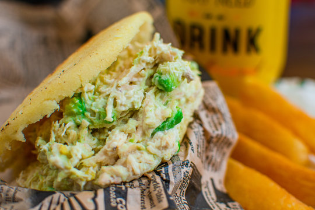

Arepas stuffed with Reina pepiada

The corn-iest part of hosting your friends for dinner, this recipe is a two-parter!
Ingredients
For the arepas
- 2 cups of PAN flour (or any other pre-cooked corn meal)
- 2.5 cups of water
- 1 teaspoon of salt
- Shredded cheese
For the Reina pepiada stuffing
- 2 chicken breasts
- 2 avocados
- 1 red onion
- 2 garlic cloves
- 2 tbsp mayo
- 2 lemons
- Salt
- Black pepper
- Onion powder
- Garlic powder
Steps
- Begin with the stuffing. Cook and shred or chop the chicken breasts.
- Finely chop the onion and garlic. Juice the lemons.
- Smash the avocados on a big bowl, and mix in the chicken, the onion, the garlic, the mayo and the lemon juice.
- Add salt, pepper, onion powder and garlic powder to taste. Mix it all together.
- Set your Reina pepiada stuffing aside.
- Mix the flour, water and salt and knead for two minutes.
- Let the dough sit for five minutes.
- Dampen your hands and make dough balls about 1.5 inches wide, and then smash them into round patties. If you would like to add shredded cheese to your arepas, you should add a pinch when making each ball.
- Coat a pan with oil. Cook the arepas on medium to high heat, around 5 minutes per side.
- The arepas are ready! Wait for them to cool down enough to hold, and then open them up horizontally, like pita bread, and stuff them with Reina pepiada!